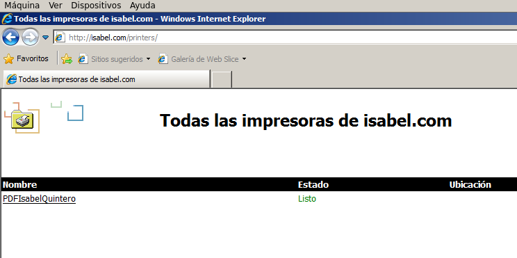

- Módulo: Administración de Sistemas Operativos
- Título del trabajo Servidor de Impresión.
- Componentes del grupo: Isabel Quintero Sánchez.
- Curso Académico: 2014/2015
- Fecha de entrega: 23 de Febrero de 2015
Para esta práctica utilizaremos dos MV Windows 2008 Server, donde realizaremos paso a paso que nos indica el enunciado de la práctica.
En primer lugar, como no tenemos impresora física en clase, instalaremos el programa llamado PDFCreator. PDFCreator es una utilidad completamente gratuita con la que podremos crear archivos PDF desde cualquier aplicación, desde el Bloc de notas hasta Word, Excel, etc. Este programa funciona simulando ser una impresora, de esta forma, instalando PDFCreator todas tus aplicaciones con opción para imprimir te permitirán crear archivos PDF en cuestión de segundos.
Para probar la nueva impresora debemos abrir el Bloc de notas y creamos un fichero, luego seleccionamos imprimir y elegimos como impresora predeterminada el PDFCreator. Cuando finalice el proceso se abrirá un fichero PDF (requiere que instales el Acrobat reader) con el resultado de la impresión:.
Instalación requerida de Adobe.

Finalmente, compartimos la impresora en el servidor y como nombre del recurso compartido utilizaremos "PDFTuNombreTusApellidos".
Analizaremos el modo en que los clientes de nuestra red se pueden conectar a las impresoras que se "ofrecen" en nuestro "Active Directory" y que se encuentran instaladas y accesibles. Lo primero que realizaremos será configurar la impresión WEB en los clientes.
Instalamos el Active directory, creando un nuevo bosque.
Luego, procedemos a la instalación de "Servicios de impresión y Documentos" e "Impresión en Internet".
Ahora desde el equipo cliente Windows y el propio servidor, debemos acceder a la dirección "http://isabel.com/printers" para que aparezca en nuestro navegador un entorno que permite gestionar las impresoras de dicho equipo.
Accedemos desde el Servidor.
Accedemos desde el Cliente.
El siguiente paso será agregar nuestra impresora al Cliente para poder imprimir.
Luego, crearemos un nuevo documento de texto y le daremos a la opción de imprimir eligiendo la impresora anteriormente compartida.
Finalmente, en el servidor entramos en el navegador y ponemos el nombre de dominio o ip de la MV del servidor y pausamos las acciones de impresión y nos aparecerá el documento creado.
Una vez reaunadadas las acciones, abrimos el PDFCreator, guardamos el documento y se creará en formato PDF.